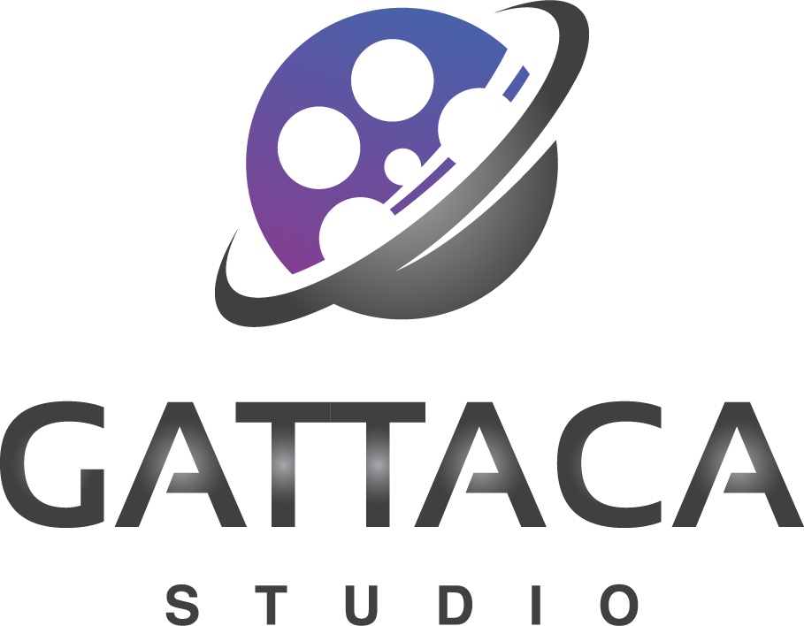
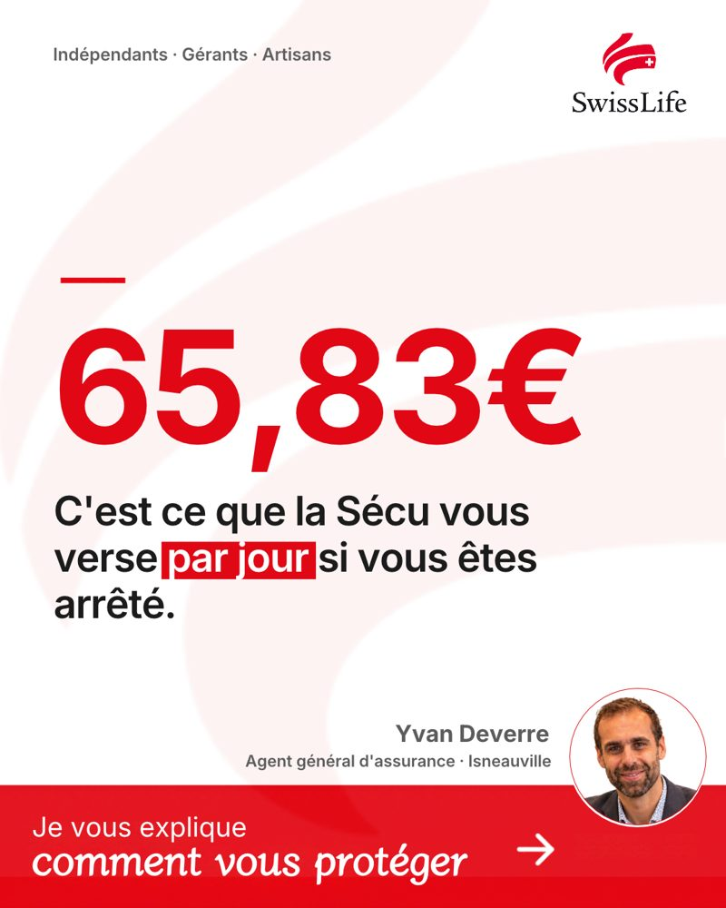
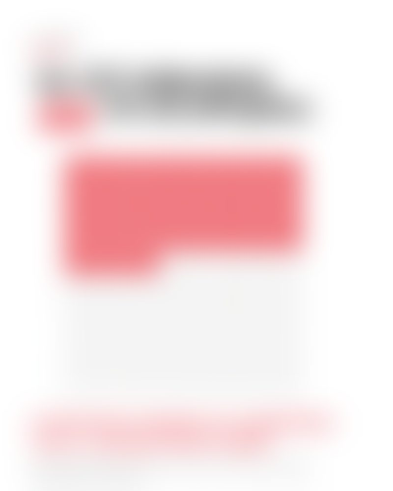
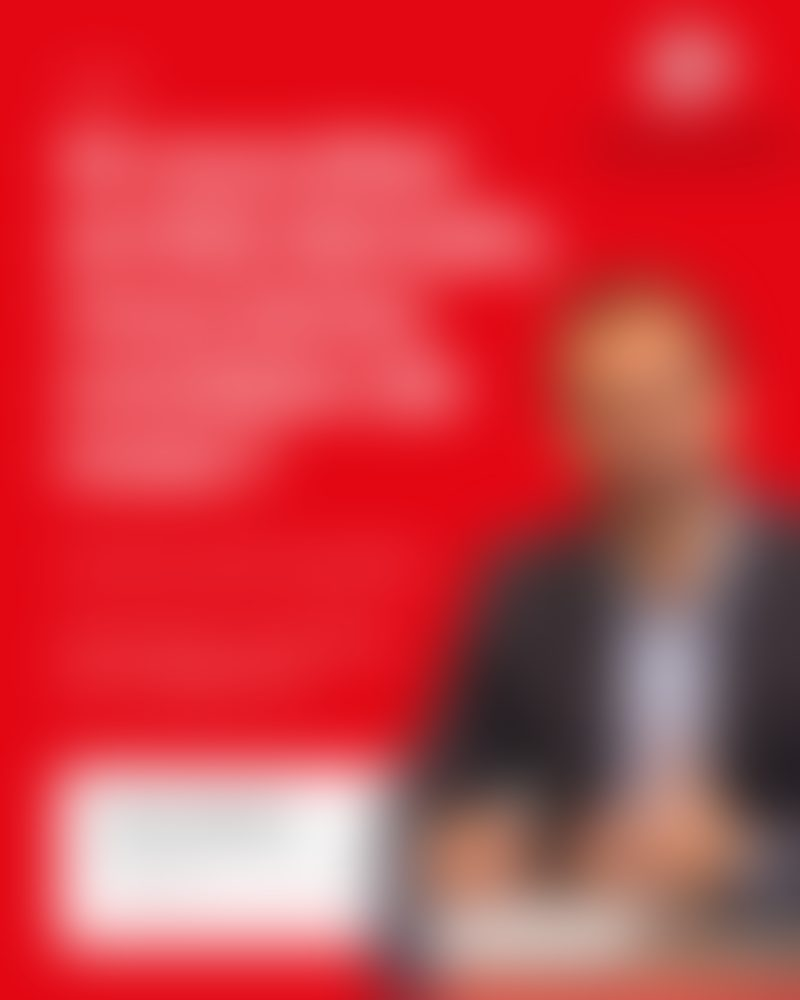

Personal branding essentiel : LinkedIn et vidéo
Pour Ivan Deverre, agent général Swiss Life
Gattaca Studio
Proposition commerciale

En prévoyance santé et en patrimoine, le visage et la parole du conseiller pèsent avant le produit.
Avant un rendez-vous, on regarde votre profil LinkedIn. Il doit rassurer en quelques secondes.
Une parole régulière installe votre expertise. Un post isolé ne suffit pas.
Gattaca Studio · Proposition Ivan Deverre
2
Chaque mois, nous choisissons vos sujets parmi les thèmes qui intéressent le plus vos prospects.
Chiffres, règles et angle sont posés avant l’écriture. Chaque post est rédigé avec votre voix.
Un tournage en studio tous les deux mois suffit à alimenter vos vidéos.
Mentions obligatoires, aucune promesse de performance : une relecture conformité précède chaque publication.
Gattaca Studio · Proposition Ivan Deverre
3
2
posts rédigés et illustrés
2
vidéos montées et sous-titrées
1
tournage en studio tous les deux mois
Soit une publication par semaine, en alternant post et vidéo.
Gattaca Studio · Proposition Ivan Deverre
4
Gattaca Studio · Proposition Ivan Deverre
5
La vidéo de personal branding
30 à 60 s
Face caméra, au format vertical, sous-titrée pour une lecture sans le son.
Un sujet, une idée, un appel à l’action.
Aperçu simulé de votre première capsule
Humaniser
Parcours, valeurs, coulisses du quotidien.
Démontrer
Idées reçues, erreurs à éviter, garanties mal comprises.
Rassurer
Le rôle d’un agent général, les sinistres, l’ancrage local.
Se différencier
L’évolution du métier, les nouveaux risques, l’actualité.
L’objectif : être le professionnel auquel on pense quand on a besoin d’un conseil. Pas devenir influenceur.
Gattaca Studio · Proposition Ivan Deverre
6
Comment une vidéo est fabriquée
Avant
Pendant
Après
Deux métiers par vidéo, l’écriture et la réalisation. Le temps devant la caméra n’en est qu’une petite partie.
Gattaca Studio · Proposition Ivan Deverre
7
Chaque vidéo a sa fiche · exemple
contenu
contenu reserve au demarrage de la mission avec un brief detaille des sujets et des angles prepares pour
contenu reserve
contenu reserve au demarrage de la mission avec un brief detaille des sujets et des angles prepares pour vous contenu reserve au demarrage
contenu reserve au demarrage de la mission avec un brief detaille des
contenu reserve au demarrage de la mission avec un brief detaille des sujets
contenu reserve au demarrage de la mission avec un brief detaille des sujets et des angles prepares
Gattaca Studio · Proposition Ivan Deverre
8
Dévoilé au démarrage de la mission
Votre première saison
Diffusées aux mois 2 et 3
01 Pourquoi j’ai choisi ce métier
Humaniser
02 Ce que mes clients ignorent sur leur assurance
Démontrer
03 Agent général : ça change quoi ?
Rassurer
04 Ma vision de l’assurance de demain
Se différencier
Diffusées aux mois 4 et 5
05 Ce que j’aime le plus dans mon métier
Humaniser
06 Trois erreurs que je vois souvent
Démontrer
07 Un sinistre : que se passe-t-il vraiment ?
Rassurer
08 Ce qui a changé pour les entreprises
Se différencier
Diffusées aux mois 6 et 7
09 Le jour où l’assurance prend son sens
Humaniser
10 Indépendant arrêté : ce que verse la Sécu
Démontrer
11 Pourquoi je privilégie le contact humain
Rassurer
12 Les nouveaux risques qui arrivent
Se différencier
Gattaca Studio · Proposition Ivan Deverre
9
Exemple de post · le visuel



Gattaca Studio · Proposition Ivan Deverre
10
La suite au démarrage de la mission
Exemple de post · le texte
contenu reserve
contenu reserve au demarrage de la mission avec un brief detaille des sujets et des
contenu reserve au demarrage de la
contenu reserve au demarrage de la mission avec un brief
contenu reserve au demarrage de la mission avec un brief detaille des sujets et
contenu reserve au demarrage de la mission avec
contenu reserve au demarrage de la mission avec
contenu reserve au demarrage de la
contenu reserve au demarrage de la mission avec un brief detaille des
contenu reserve au
contenu reserve au demarrage de la mission avec
contenu reserve au demarrage de la mission avec
contenu reserve au demarrage de la mission avec un
Gattaca Studio · Proposition Ivan Deverre
11
Dévoilé au démarrage de la mission
Sujets à explorer · prévoyance
| contenu reserve | contenu reserve au | contenu reserve au |
|---|---|---|
| contenu reserve au demarrage de la mission avec un brief | contenu reserve au demarrage de | contenu reserve au demarrage de la mission avec un brief detaille |
| contenu reserve au demarrage de la mission avec un brief | contenu reserve au demarrage de | contenu reserve au demarrage de la mission avec un brief |
| contenu reserve au demarrage de la mission avec un brief | contenu reserve au demarrage de | contenu reserve au demarrage de la mission avec un |
| contenu reserve au demarrage de la mission | contenu reserve au demarrage de la | contenu reserve au demarrage de la mission |
| contenu reserve au demarrage de la mission avec | contenu reserve au demarrage de | contenu reserve au demarrage de la mission avec |
Sources : baromètre CSA pour MetLife 2026, April (barème 2026 du régime des indépendants)
12
Dévoilé au démarrage de la mission
Sujets à explorer · retraite et transmission
| contenu reserve | contenu reserve au | contenu reserve au |
|---|---|---|
| contenu reserve au demarrage de la mission avec un | contenu reserve au demarrage de la | contenu reserve au demarrage de la mission avec |
| contenu reserve au demarrage de la mission avec | contenu reserve au demarrage | contenu reserve au demarrage de la mission avec un brief |
| contenu reserve au demarrage de la mission avec | contenu reserve au demarrage de la | contenu reserve au demarrage de la mission |
| contenu reserve au demarrage de la mission avec un | contenu reserve au | contenu reserve au demarrage de la |
| contenu reserve au demarrage de la mission avec | contenu reserve au demarrage de | contenu reserve au demarrage de la |
Sources : ministère de l’Économie (encours PER), Journal de l’Économie (avril 2026)
13
Dévoilé au démarrage de la mission
Atelier de lancement, shooting photo, relooking du profil, calendrier éditorial et premier tournage.
Une publication par semaine : deux posts et deux vidéos par mois, chacun validé par vos soins.
Une séance en studio pour les quatre vidéos des deux mois suivants.
Gattaca Studio · Proposition Ivan Deverre
14
Mois 1 · le point de départ
15 min
Vos objectifs à un an, les contrats à développer, ce que vous attendez de LinkedIn.
20 min
Vos profils types, leurs questions récurrentes, ce qui les fait signer chez vous.
15 min
Vos concurrents, ce qui vous distingue, votre ancrage local.
20 min
Vos mots, vos convictions, ce que vous refusez de dire ou de montrer.
10 min
Votre aisance, parler librement ou être guidé, vos anecdotes.
10 min
Les règles Swiss Life, votre circuit de validation, les éléments existants.
À préparer : deux ou trois histoires clients marquantes.
Ensuite, vous recevez : une synthèse d’une page, le calendrier des deux premiers mois et les sujets du premier tournage.
Gattaca Studio · Proposition Ivan Deverre
15
1
Nous les proposons avec leur brief, vous les validez.
2
Nous écrivons, montons et préparons les visuels.
3
Vous relisez, ajustez et validez chaque contenu.
4
Mentions et formulations vérifiées avant diffusion.
5
Une par semaine, en alternant post et vidéo.
Les sujets du mois sont validés avant le 20 du mois précédent.
Gattaca Studio · Proposition Ivan Deverre
16
Mois 1
900 €
HT, pré-production
Atelier de lancement, shooting photo, relooking du profil, calendrier éditorial. Diagnostic, sujets et premier post déjà livrés.
Mois 2 à 7
900 €
HT par mois, 6 mois minimum
Sujets et brief technique, 2 posts et 2 vidéos, un tournage tous les deux mois, validation et relecture conformité.
Soit 6 300 € HT pour les 7 mois.
Gattaca Studio · Proposition Ivan Deverre
17
Gattaca Studio · Proposition Ivan Deverre
18
| Offre complète | Formule essentielle | |
|---|---|---|
| Stratégie de présence | Comprise | Non : sujets pris parmi les thèmes qui performent |
| Publications par mois | 8, deux par semaine | 4, une par semaine |
| Tournage en studio | Chaque mois | Tous les deux mois |
| Vidéos diffusées | 4 par mois | 2 par mois |
| Posts et brief technique | 4 par mois | 2 par mois |
| Bilan mensuel des indicateurs | Compris | Non compris |
| Photos | Shooting photo réel | Shooting photo réel |
| Profil LinkedIn et calendrier | Compris | Compris |
| Prix | 1 490 € HT par mois sur 6 mois, soit 8 940 € | 900 €, puis 900 € HT par mois sur 6 mois, soit 6 300 € |
1
Fixer la date de l'atelier de lancement
2
Fixer les dates du shooting et du premier tournage
3
Valider votre synthèse et le calendrier des deux premiers mois
Découvrez nos références : canva.link/reference-cm-gattaca
Gattaca Studio
19